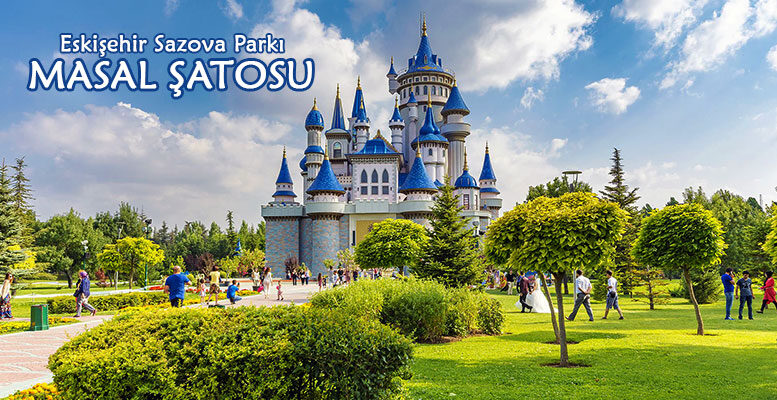

Sazova Parkı

“Eskişehir’in Disneyland’ı” lakabına layık görülen parkın açılışı, yapımı henüz 2008 yılının ekim ayında gerçekleştirilmiş. Parkın resmi adı aslında Bilim, Sanat ve Kültür Parkı. Ancak başta yerel halk olmak üzere herkes, cazibe merkezini daha çok bulunduğu bölgenin ismiyle anmayı tercih ediyor. Ağırlıklı olarak çocukların ilgisini çekebilecek tarzda mekânlarla dolu olan Sazova Parkı, yaklaşık 400 bin metrekarelik alan üzerine kurulmuş. Çocuklar için dediğimden dolayı sakın sadece oyuncaklarla dolu bir yer aklınıza gelmesin. Çünkü parkın içerisinde yetişkinlerin de keyifle zaman geçirebilecekleri bölümler bulunuyor. Bu nedenle Bilim, Sanat ve Kültür Parkı, bilhassa çocuklu ailelerin Eskişehir’de en çok vakit geçirdikleri yer olma özelliğini taşıyor.